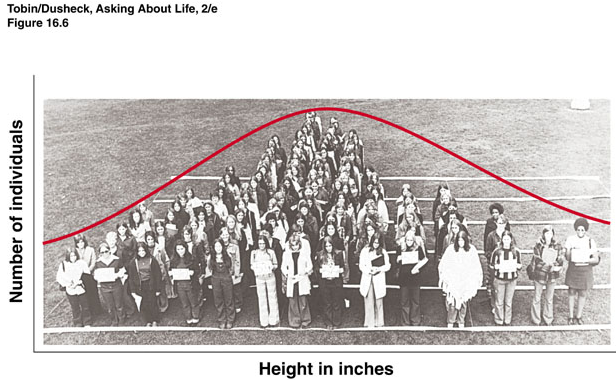
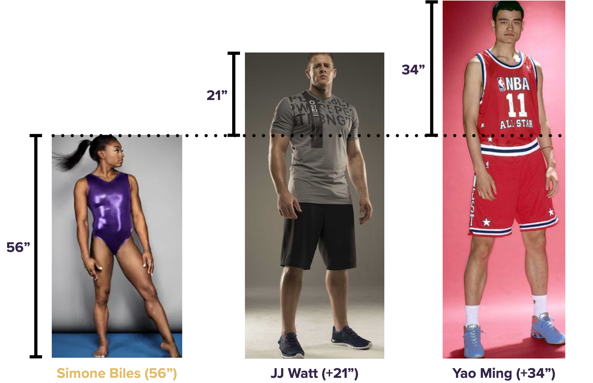
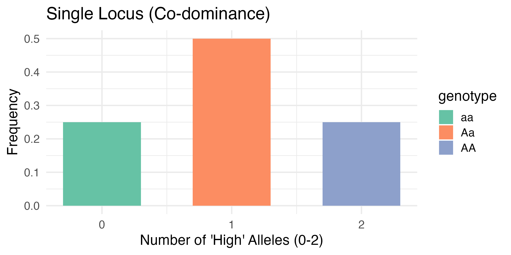
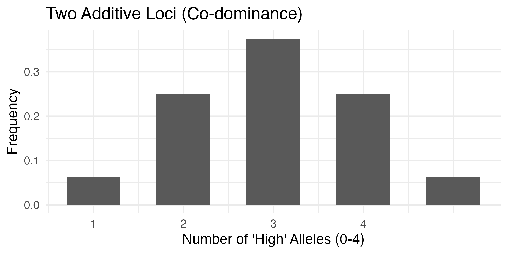
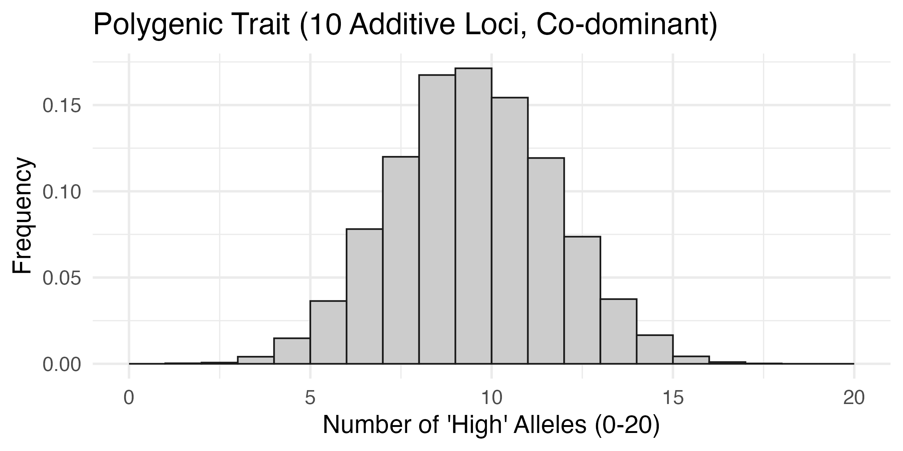
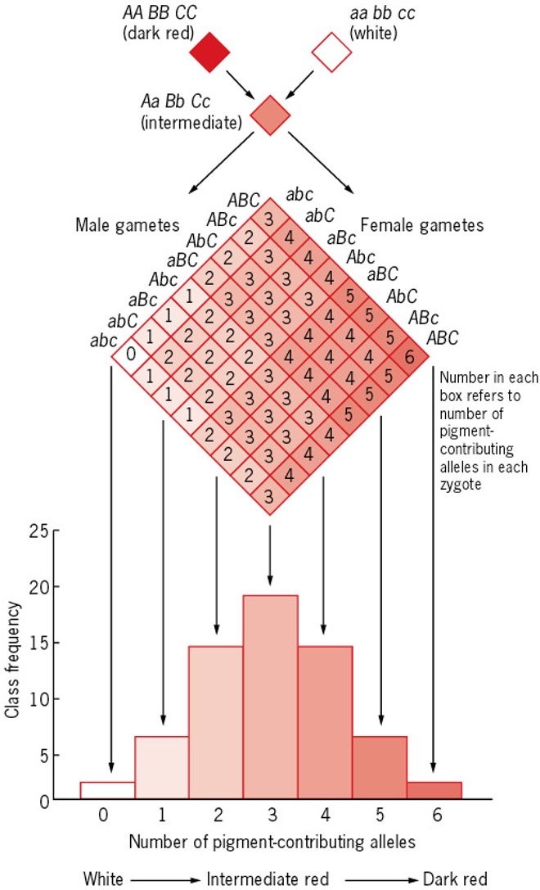

<!DOCTYPE html>
<html lang="en">
  <head>
    <meta charset="utf-8" />
    <meta name="viewport" content="width=device-width, initial-scale=1.0, maximum-scale=1.0, user-scalable=no" />

    <title></title>
    <link rel="stylesheet" href="dist/reveal.css" />
    <link rel="stylesheet" href="dist/theme/beige.css" id="theme" />
    <link rel="stylesheet" href="plugin/highlight/zenburn.css" />
	<link rel="stylesheet" href="css/layout.css" />
	<link rel="stylesheet" href="plugin/customcontrols/style.css">
	<link rel="stylesheet" href="plugin/chalkboard/style.css">

	<link rel="stylesheet" href="plugin/reveal-pointer/pointer.css" />

    <link rel="stylesheet" href="css/custom.css" />

    <script defer src="dist/fontawesome/all.min.js"></script>

	<script type="text/javascript">
		var forgetPop = true;
		function onPopState(event) {
			if(forgetPop){
				forgetPop = false;
			} else {
				parent.postMessage(event.target.location.href, "app://obsidian.md");
			}
        }
		window.onpopstate = onPopState;
		window.onmessage = event => {
			if(event.data == "reload"){
				window.document.location.reload();
			}
			forgetPop = true;
		}

		function fitElements(){
			const itemsToFit = document.getElementsByClassName('fitText');
			for (const item in itemsToFit) {
				if (Object.hasOwnProperty.call(itemsToFit, item)) {
					var element = itemsToFit[item];
					fitElement(element,1, 1000);
					element.classList.remove('fitText');
				}
			}
		}

		function fitElement(element, start, end){

			let size = (end + start) / 2;
			element.style.fontSize = `${size}px`;

			if(Math.abs(start - end) < 1){
				while(element.scrollHeight > element.offsetHeight){
					size--;
					element.style.fontSize = `${size}px`;
				}
				return;
			}

			if(element.scrollHeight > element.offsetHeight){
				fitElement(element, start, size);
			} else {
				fitElement(element, size, end);
			}		
		}


		document.onreadystatechange = () => {
			fitElements();
			if (document.readyState === 'complete') {
				if (window.location.href.indexOf("?export") != -1){
					parent.postMessage(event.target.location.href, "app://obsidian.md");
				}
				if (window.location.href.indexOf("print-pdf") != -1){
					let stateCheck = setInterval(() => {
						clearInterval(stateCheck);
						window.print();
					}, 250);
				}
			}
	};


        </script>
  </head>
  <body>
    <div class="reveal">
      <div class="slides"><section  data-markdown><script type="text/template"><!-- .slide: class="drop" data-auto-animate="true" -->
<div class="" style="position: absolute; left: 0px; top: 0px; height: 700px; width: 960px; min-height: 700px; display: flex; flex-direction: column; align-items: center; justify-content: center" absolute="true">

## Inheritance of complex traits

</div></script></section><section  data-markdown><script type="text/template"><!-- .slide: class="drop" data-auto-animate="true" -->
<div class="" style="position: absolute; left: 0px; top: 0px; height: 700px; width: 960px; min-height: 700px; display: flex; flex-direction: column; align-items: center; justify-content: center" absolute="true">

## Inheritance of complex traits



<div class="footnotes" role="doc-endnotes">
<ol>
<li id="fn:1" role="doc-endnote" class="footnote"><p>

https://artpictures.club/autumn-2023.html

</p></li></ol>
</div>
</div></script></section><section  data-markdown><script type="text/template"><!-- .slide: class="drop" -->
<div class="" style="position: absolute; left: 0px; top: 0px; height: 700px; width: 960px; min-height: 700px; display: flex; flex-direction: column; align-items: center; justify-content: center" absolute="true">

## Quantitative Genetics
- Many traits have <mark>continuous variations</mark>. These are known as <mark>quantitative traits</mark>.
- &shy;<!-- .element: class="fragment" data-fragment-index="1" -->Example:
	- &shy;<!-- .element: class="fragment" data-fragment-index="2" -->plant height, days to maturity, seed yield, drought tolerance
- &shy;<!-- .element: class="fragment" data-fragment-index="3" -->Some examples of Mendelian traits (binary or discontinuous)
	- &shy;<!-- .element: class="fragment" data-fragment-index="4" -->pea color
	- &shy;<!-- .element: class="fragment" data-fragment-index="5" -->In human: ability to taste phenylthiocarbamide, albinism, blood type etc.
</div></script></section><section  data-markdown><script type="text/template"><!-- .slide: class="drop" data-auto-animate="true" -->
<div class="" style="position: absolute; left: 0px; top: 0px; height: 700px; width: 960px; min-height: 700px; display: flex; flex-direction: column; align-items: center; justify-content: center" absolute="true">

### Is quantitative trait compatible with Mendelian Genetics?
- When Mendelian genetics was rediscovered in the early 1900s, emphasis was placed on one to three loci segregating, creating discrete phenotypic categories. <mark>seems incompatible with continuously varying traits</mark>
</div></script></section><section  data-markdown><script type="text/template"><!-- .slide: class="drop" data-auto-animate="true" -->
<div class="" style="position: absolute; left: 0px; top: 0px; height: 700px; width: 960px; min-height: 700px; display: flex; flex-direction: column; align-items: center; justify-content: center" absolute="true">

### Is quantitative trait compatible with Mendelian Genetics?
<div class="callout callout-color9">
<div class="callout-title">
<div class="callout-icon">

<i class="fas fa-quote-left" ></i>


</div>
<div class="callout-title-inner">

In the early 1900s, when Mendel’s laws were rediscovered, controversy arose about whether these laws were applicable to continuous traits. A group known as the _biometricians_ ... saw no evidence that such traits followed Mendel’s laws, ... concluded that Mendelian loci do not control continuous traits. 

</div>
</div>
<div class="callout-content">

</div>
</div>

- &shy;<!-- .element: class="fragment" data-fragment-index="1" -->This made Mendelian genetics initially an obstacle to the acceptance of Darwin's evolutionary theory.
- &shy;<!-- .element: class="fragment" data-fragment-index="2" --><mark>What do you think?</mark> 


<div class="footnotes" role="doc-endnotes">
<ol>
<li id="fn:1" role="doc-endnote" class="footnote"><p>

Introduction to Genetic Analysis, ed 11, p716

</p></li></ol>
</div>
</div></script></section><section ><section data-markdown><script type="text/template"><!-- .slide: class="drop" -->
<div class="" style="position: absolute; left: 0px; top: 0px; height: 700px; width: 960px; min-height: 700px; display: flex; flex-direction: column; align-items: center; justify-content: center" absolute="true">

<div class="callout callout-color9">
<div class="callout-title">
<div class="callout-icon">

<i class="fas fa-quote-left" ></i>


</div>
<div class="callout-title-inner">

Multifactorial Hypothesis

</div>
</div>
<div class="callout-content">

In the early 1900s, William Bateson and George Yule suggested that continuous traits are governed by a combination of multiple Mendelian loci, each with a small effect on the trait, and environmental factors.

</div>
</div>

- &shy;<!-- .element: class="fragment" data-fragment-index="1" --><mark>How would this work?</mark>
</div></script></section><section data-markdown><script type="text/template"><!-- .slide: class="drop" -->
<div class="" style="position: absolute; left: 0px; top: 0px; height: 700px; width: 960px; min-height: 700px; display: flex; flex-direction: column; align-items: center; justify-content: center" absolute="true">

### Multifactorial Hypothesis: one locus

</div></script></section><section data-markdown><script type="text/template"><!-- .slide: class="drop" -->
<div class="" style="position: absolute; left: 0px; top: 0px; height: 700px; width: 960px; min-height: 700px; display: flex; flex-direction: column; align-items: center; justify-content: center" absolute="true">

### Multifactorial Hypothesis: two loci, additive

</div></script></section><section data-markdown><script type="text/template"><!-- .slide: class="drop" -->
<div class="" style="position: absolute; left: 0px; top: 0px; height: 700px; width: 960px; min-height: 700px; display: flex; flex-direction: column; align-items: center; justify-content: center" absolute="true">

### Multifactorial Hypothesis: ten loci, additive



<div class="footnotes" role="doc-endnotes">
<ol>
<li id="fn:1" role="doc-endnote" class="footnote"><p>

code [here]()

</p></li></ol>
</div>
</div></script></section><section data-markdown><script type="text/template"><!-- .slide: class="drop" -->
<div class="" style="position: absolute; left: 0px; top: 0px; height: 700px; width: 960px; min-height: 700px; display: flex; flex-direction: column; align-items: center; justify-content: center" absolute="true">

### Multifactorial Hypothesis

</div></script></section></section><section  data-markdown><script type="text/template"><!-- .slide: class="drop" -->
<div class="" style="position: absolute; left: 0px; top: 0px; height: 700px; width: 960px; min-height: 700px; display: flex; flex-direction: column; align-items: center; justify-content: center" absolute="true">

### Define the "genetic architecture" of a quantitative trait
- Quantitative traits that are controlled by multiple genes --> "polygenic", often associated with "complex trait/disease"
- &shy;<!-- .element: class="fragment" data-fragment-index="1" -->Understanding the inheritance of complex traits is one of the most important challenges facing geneticists in the twenty-first century
- &shy;<!-- .element: class="fragment" data-fragment-index="2" -->**Genetic architecture**: description of all of the genetic factors that influence a trait
	- &shy;<!-- .element: class="fragment" data-fragment-index="3" --><mark>property of a specific population, can vary among populations</mark>
	- &shy;<!-- .element: class="fragment" data-fragment-index="4" -->different alleles segregate in different pops, and different pops experience different environments.
</div></script></section><section  data-markdown><script type="text/template"><!-- .slide: class="drop" data-auto-animate="true" -->
<div class="" style="position: absolute; left: 0px; top: 0px; height: 700px; width: 960px; min-height: 700px; display: flex; flex-direction: column; align-items: center; justify-content: center" absolute="true">

### Types of traits and inheritance
- **Continuous trait** is one that can take on a potentially infinite number of states over a continuous range, e.g., human height.
	- &shy;<!-- .element: class="fragment" data-fragment-index="1" --><mark>typically have complex inheritance</mark> involving multiple genetic and environmental factors.
- &shy;<!-- .element: class="fragment" data-fragment-index="2" -->**Categorical trait** is one where individuals in a population can be sorted into discrete categories, e.g., purple vs white flower or tall vs short stems in Mendel's pea plants.
	- &shy;<!-- .element: class="fragment" data-fragment-index="3" --><mark>typically controlled by one or two genes</mark>, hence exhibiting simple inheritance
</div></script></section><section  data-markdown><script type="text/template"><!-- .slide: class="drop" data-auto-animate="true" -->
<div class="" style="position: absolute; left: 0px; top: 0px; height: 700px; width: 960px; min-height: 700px; display: flex; flex-direction: column; align-items: center; justify-content: center" absolute="true">

### Types of traits and inheritance
- **Threshold trait**: often used in medical genetics, where individuals are classified into "disease" and "non-disease" groups, e.g., diabetes
	- &shy;<!-- .element: class="fragment" data-fragment-index="1" -->having multiple genetic and environmental factors
	- &shy;<!-- .element: class="fragment" data-fragment-index="2" -->individuals who have a certain number of risk factors combined exceed a threshold and develop the disease ("buffering" hypothesis)
- &shy;<!-- .element: class="fragment" data-fragment-index="3" -->**Meristic trait**, or "counting trait", can take on a number of discrete values.
</div></script></section><section  data-markdown><script type="text/template"><!-- .slide: class="drop" -->
<div class="" style="position: absolute; left: 0px; top: 0px; height: 700px; width: 960px; min-height: 700px; display: flex; flex-direction: column; align-items: center; justify-content: center" absolute="true">

### Statistical description of a quantitative trait

**Mean**: the arithmetic average of a set of data

`$\bar{X}=\frac{\sum{X_i}}{n}$`

**Variance** is a measure of the deviation from the mean

`$\sigma_X^2=E[(X-\mu)^2]=E[X^2]-E[X]^2$`

`$\sigma_X^2=\frac{1}{n}\sum{(X_i-\bar{X})^2}$`

`$s_X^2=\frac{1}{n-1}\sum{(X_i-\bar{X})^2}$`
</div></script></section><section  data-markdown><script type="text/template"><!-- .slide: class="drop" -->
<div class="" style="position: absolute; left: 0px; top: 0px; height: 700px; width: 960px; min-height: 700px; display: flex; flex-direction: column; align-items: center; justify-content: center" absolute="true">

### More on Mean and Variance
- population mean, sample mean, expectation of random variable
- &shy;<!-- .element: class="fragment" data-fragment-index="1" -->We have a binomially distributed random variable `$X\sim B(n,p)$`
	- &shy;<!-- .element: class="fragment" data-fragment-index="2" -->what is its mean, variance?
- &shy;<!-- .element: class="fragment" data-fragment-index="3" -->What's the relationship and difference between sample variance, sample standard deviation (SD) and standard error of the mean (SEM)?
</div></script></section><section  data-markdown><script type="text/template"><!-- .slide: class="drop" -->
<div class="" style="position: absolute; left: 0px; top: 0px; height: 700px; width: 960px; min-height: 700px; display: flex; flex-direction: column; align-items: center; justify-content: center" absolute="true">

### Normal distribution
<split left="1" right="2" gap="1" align="top">


- `$X \sim N(\mu, \sigma^2)$`
- &shy;<!-- .element: class="fragment" data-fragment-index="1" -->`$f(x)=\frac{1}{\sqrt{2\pi\sigma^2}}e^{\frac{(x-\mu)^2}{2\sigma^2}}$`
- &shy;<!-- .element: class="fragment" data-fragment-index="2" -->Can mean and variance vary independently?
	- &shy;<!-- .element: class="fragment" data-fragment-index="3" -->is that generally true of all distributions?
</split>
</div>

<aside class="notes"><ul>
<li>panel a: an example using height data for 660 women from the United States collected by the Centers for Disease Control and Prevention</li>
</ul>
</aside></script></section><section  data-markdown><script type="text/template"><!-- .slide: class="drop" -->
<div class="" style="position: absolute; left: 0px; top: 0px; height: 700px; width: 960px; min-height: 700px; display: flex; flex-direction: column; align-items: center; justify-content: center" absolute="true">

### A simple genetic model for quantitative traits
- What is a (mathematical) model?
	- &shy;<!-- .element: class="fragment" data-fragment-index="1" -->simplified representation of a complex phenomenon.
	- &shy;<!-- .element: class="fragment" data-fragment-index="2" -->can differ in complexity 
		- &shy;<!-- .element: class="fragment" data-fragment-index="3" -->`$volume=f(time)$`
		- &shy;<!-- .element: class="fragment" data-fragment-index="4" -->`$volume=f(rate\times time)$`
	- &shy;<!-- .element: class="fragment" data-fragment-index="5" -->more complex = better?
- &shy;<!-- .element: class="fragment" data-fragment-index="6" -->A simple genetic model for Yao's height
	- &shy;<!-- .element: class="fragment" data-fragment-index="7" -->229 cm, 59 cm taller than an average man in Shanghai
	- &shy;<!-- .element: class="fragment" data-fragment-index="8" -->`$X=\bar{X}+g+e$`
	- &shy;<!-- .element: class="fragment" data-fragment-index="9" -->`$x=g+e=59 cm$`
	- &shy;<!-- .element: class="fragment" data-fragment-index="10" -->how to estimate `$g$` and `$e$`?
</div></script></section></div>
    </div>

    <script src="dist/reveal.js"></script>

    <script src="plugin/markdown/markdown.js"></script>
    <script src="plugin/highlight/highlight.js"></script>
    <script src="plugin/zoom/zoom.js"></script>
    <script src="plugin/notes/notes.js"></script>
    <script src="plugin/math/math.js"></script>
	<script src="plugin/mermaid/mermaid.js"></script>
	<script src="plugin/chart/chart.min.js"></script>
	<script src="plugin/chart/plugin.js"></script>
	<script src="plugin/menu/menu.js"></script>
	<script src="plugin/customcontrols/plugin.js"></script>
	<script src="plugin/chalkboard/plugin.js"></script>
	<script src="plugin/reveal-pointer/pointer.js"></script>

    <script>
      function extend() {
        var target = {};
        for (var i = 0; i < arguments.length; i++) {
          var source = arguments[i];
          for (var key in source) {
            if (source.hasOwnProperty(key)) {
              target[key] = source[key];
            }
          }
        }
        return target;
      }

	  function isLight(color) {
		let hex = color.replace('#', '');

		// convert #fff => #ffffff
		if(hex.length == 3){
			hex = `${hex[0]}${hex[0]}${hex[1]}${hex[1]}${hex[2]}${hex[2]}`;
		}

		const c_r = parseInt(hex.substr(0, 2), 16);
		const c_g = parseInt(hex.substr(2, 2), 16);
		const c_b = parseInt(hex.substr(4, 2), 16);
		const brightness = ((c_r * 299) + (c_g * 587) + (c_b * 114)) / 1000;
		return brightness > 155;
	}

	var bgColor = getComputedStyle(document.documentElement).getPropertyValue('--r-background-color').trim();
	var isLight = isLight(bgColor);

	if(isLight){
		document.body.classList.add('has-light-background');
	} else {
		document.body.classList.add('has-dark-background');
	}

      // default options to init reveal.js
      var defaultOptions = {
        controls: true,
        progress: true,
        history: true,
        center: true,
        transition: 'default', // none/fade/slide/convex/concave/zoom
        plugins: [
          RevealMarkdown,
          RevealHighlight,
          RevealZoom,
          RevealNotes,
          RevealMath.MathJax3,
		  RevealMermaid,
		  RevealChart,
		  RevealCustomControls,
		  RevealMenu,
	      RevealPointer,
		  RevealChalkboard, 
        ],


    	allottedTime: 120 * 1000,

		mathjax3: {
			mathjax: 'plugin/math/mathjax/tex-mml-chtml.js',
		},
		markdown: {
		  gfm: true,
		  mangle: true,
		  pedantic: false,
		  smartLists: false,
		  smartypants: false,
		},

		mermaid: {
			theme: isLight ? 'default' : 'dark',
		},

		customcontrols: {
			controls: [
				{ icon: '<i class="fa fa-pen-square"></i>',
				title: 'Toggle chalkboard (B)',
				action: 'RevealChalkboard.toggleChalkboard();'
				},
				{ icon: '<i class="fa fa-pen"></i>',
				title: 'Toggle notes canvas (C)',
				action: 'RevealChalkboard.toggleNotesCanvas();'
				},
			]
		},
		menu: {
			loadIcons: false
		}
      };

      // options from URL query string
      var queryOptions = Reveal().getQueryHash() || {};

      var options = extend(defaultOptions, {"width":960,"height":700,"margin":0.04,"controls":true,"progress":true,"slideNumber":true,"transition":"fade","transitionSpeed":"default"}, queryOptions);
    </script>

    <script>
      Reveal.initialize(options);
    </script>
  </body>

  <!-- created with Advanced Slides -->
</html>
